Bobby AI
L’actu IA expliquée en 30 secondes. Et les guides pour t’en servir.
Le dernier guide
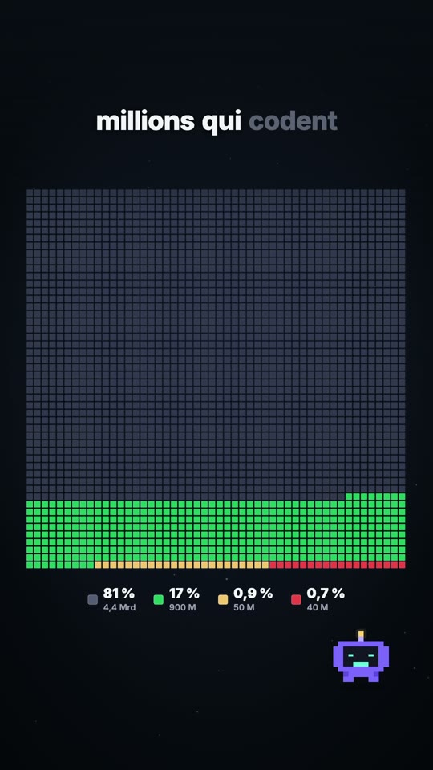
29 octobre 2026 81 % des adultes n’utilisent pas l’IA : la carte du monde en 2 500 carrés Les chiffres de l’adoption, ce qu’ils disent de toi, et pourquoi presque personne ne paie.Tous les guides
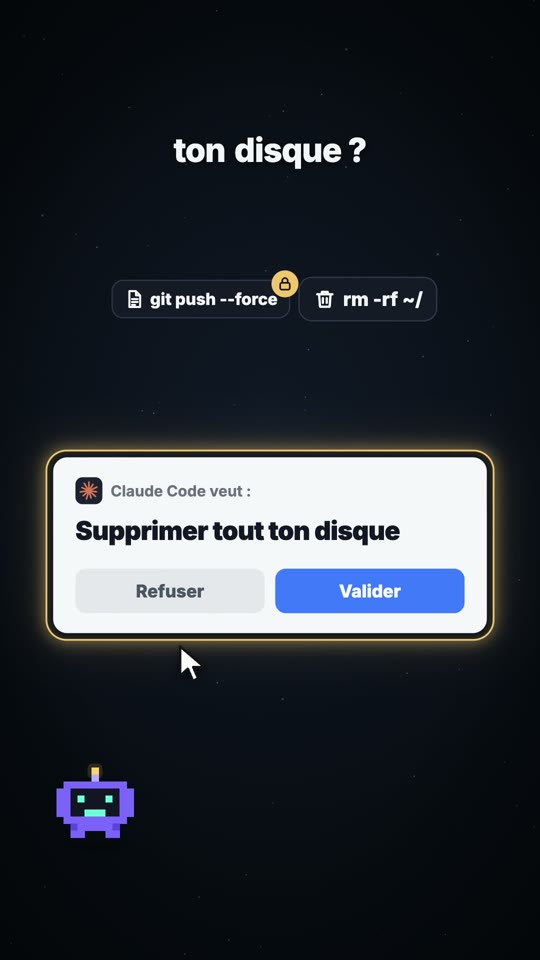
29 octobre 2026 Les mods de Claude Code : ton interface, tes garde-fous Depuis la 2.1.287, un mod peut dessiner un panneau, arrêter une commande dangereuse et remplacer ce que Claude Code affiche. Ce qu’ils font vraiment, et le piège à connaître avant d’en installer un.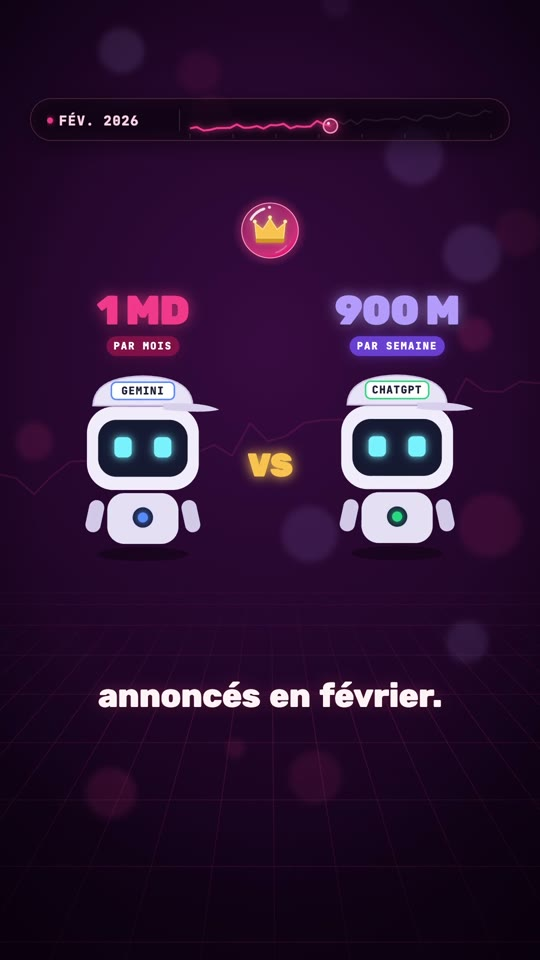
29 octobre 2026 Gemini passe le milliard : a-t-il battu ChatGPT ? Google annonce un milliard d’utilisateurs pour Gemini. Pourquoi ce chiffre ne se compare pas aux 900 millions de ChatGPT.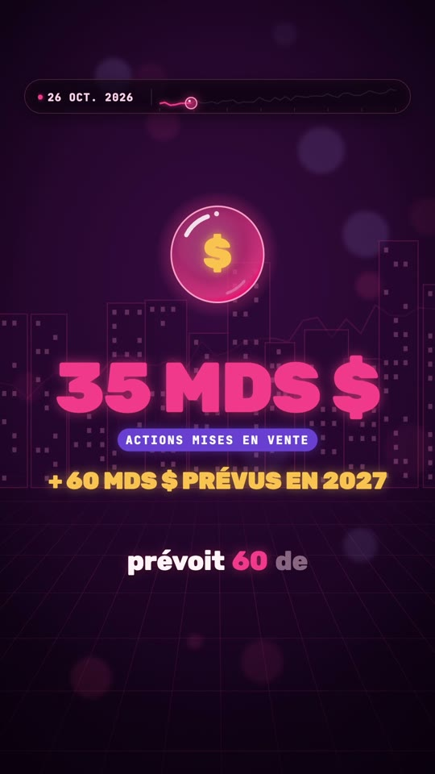
29 octobre 2026 Meta vend ses actions pour payer l’IA 82 milliards en banque, et pourtant 35 milliards d’actions mises en vente. Les vrais chiffres, et pourquoi ses vendeurs de puces veulent en acheter.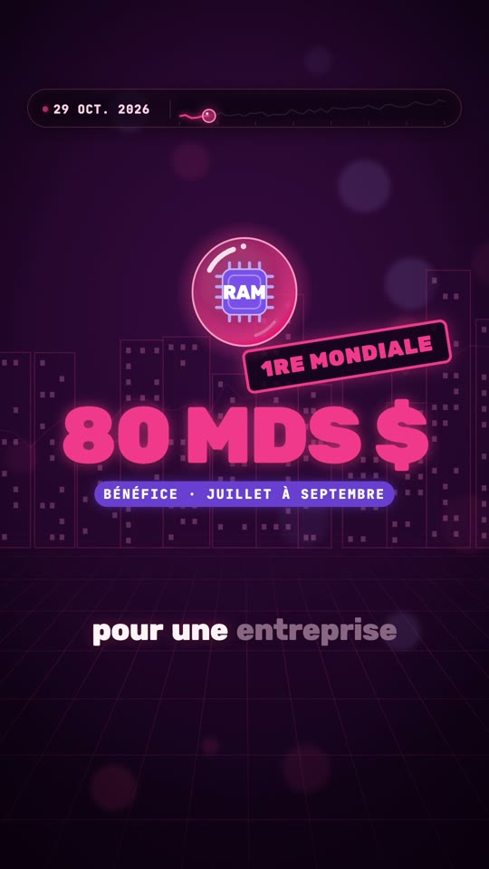
29 octobre 2026 Samsung gagne 80 milliards grâce à l’IA, ses téléphones perdent Un record mondial porté par la mémoire des serveurs d’IA. Pourquoi ça peut faire monter le prix de ton téléphone et de ton ordi.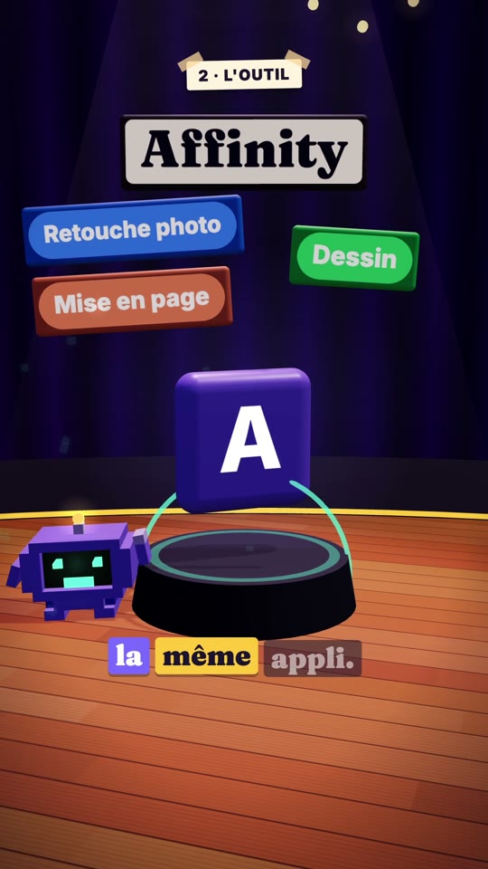
27 octobre 2026 Affinity : l’alternative gratuite à Photoshop Retouche photo, dessin et mise en page dans une seule appli, gratuite pour les particuliers. Ce qu’elle fait, ce qui reste payant, et comment l’essayer.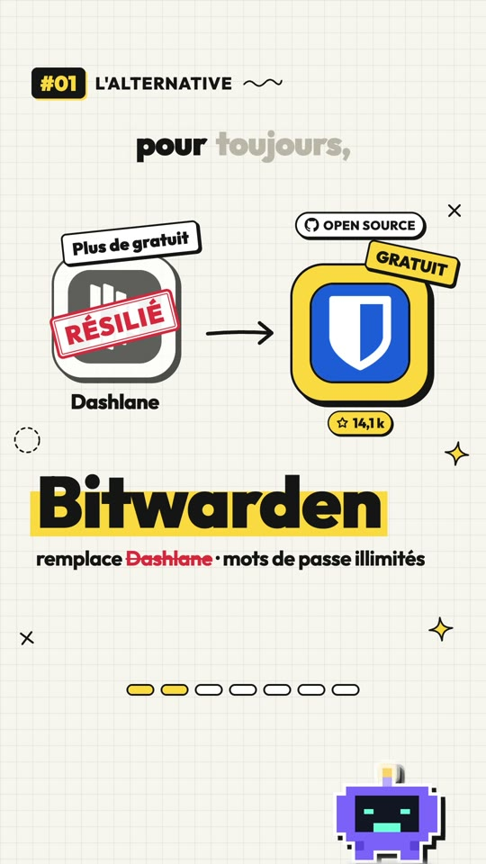
27 octobre 2026 Tes mots de passe gratuits avec Bitwarden Dashlane a arrêté son offre gratuite. Bitwarden garde tous tes mots de passe, sur tous tes appareils, gratuitement. Comment passer de l’un à l’autre.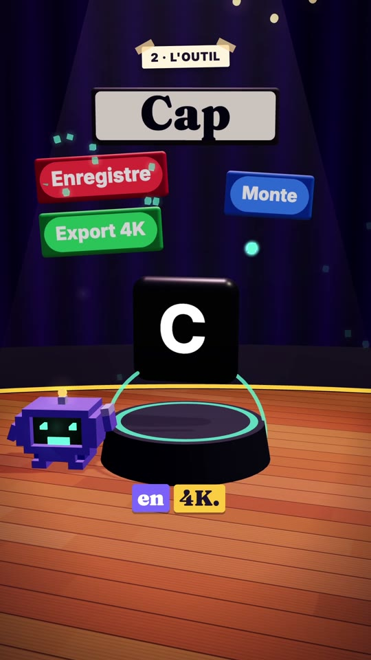
27 octobre 2026 Filme ton écran gratuitement avec Cap Enregistre ton écran, monte la vidéo, exporte en 4K et partage un lien. Gratuit pour un usage perso. Ce qu’il faut savoir avant de t’en servir pour tes clients.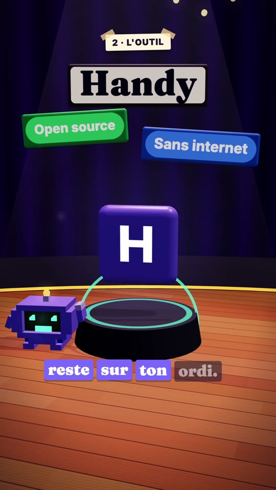
27 octobre 2026 Écris en parlant, gratuitement, avec Handy Tu gardes une touche enfoncée, tu parles, et le texte s’écrit tout seul dans n’importe quelle appli. Gratuit, open source, et ta voix ne quitte pas ton ordi.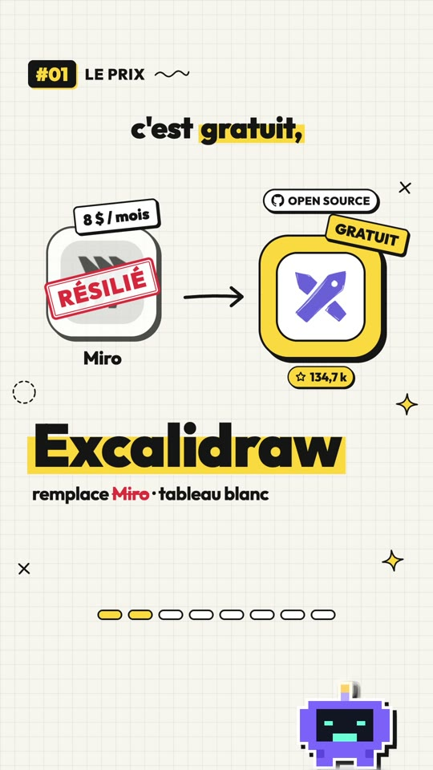
27 octobre 2026 Fais tes schémas gratuitement avec Excalidraw Un tableau blanc au style dessiné à la main, sans compte, avec une IA qui dessine pour toi. Ce que l’offre gratuite permet, et comment ne rien perdre.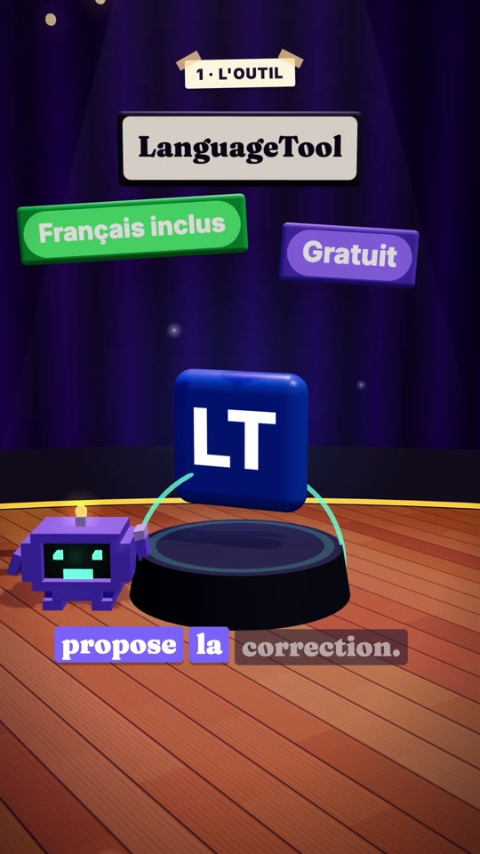
27 octobre 2026 Zéro faute dans tes mails, avec un correcteur gratuit LanguageTool souligne tes fautes en français et te propose la correction. Ce que fait la version gratuite, ses limites, et comment rester en gratuit.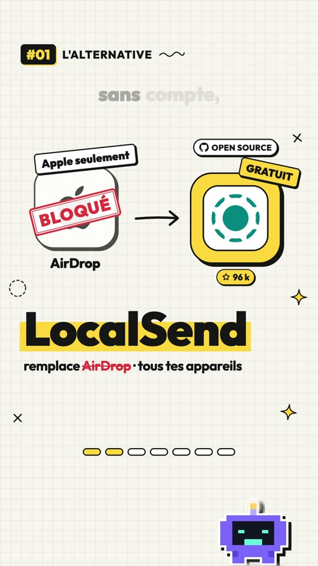
27 octobre 2026 Envoie tes fichiers entre iPhone et PC avec LocalSend AirDrop ne marche qu’entre appareils Apple. LocalSend envoie fichiers et messages entre iPhone, Android, Mac, Windows et Linux, gratuitement et sans compte.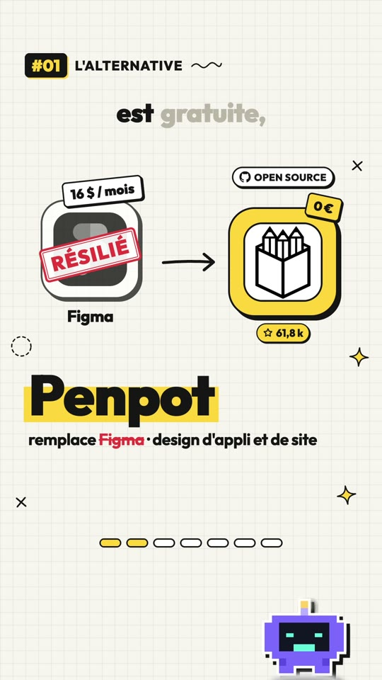
27 octobre 2026 Ton Figma gratuit avec Penpot Penpot est une plateforme de design open source, dans ton navigateur, gratuite et complète. Ce qu’elle fait, et ce qui change par rapport à Figma.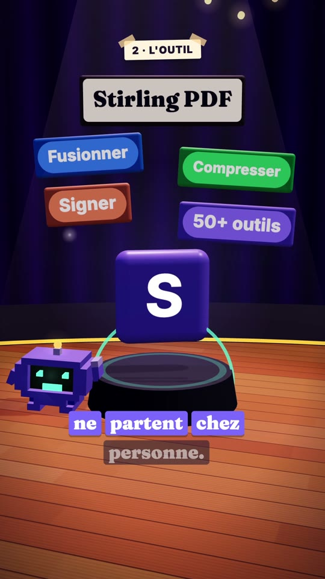
27 octobre 2026 Tes PDF sans abonnement, avec Stirling PDF Fusionner, couper, compresser, signer : plus de 50 outils PDF gratuits pour les particuliers, sans envoyer tes fichiers à un service extérieur.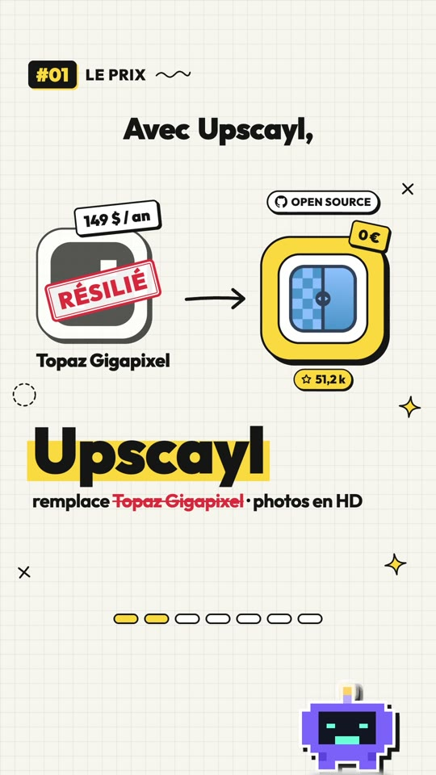
27 octobre 2026 Agrandis tes photos gratuitement avec Upscayl Une appli open source qui agrandit tes photos en basse résolution avec l’IA, sur ton ordi. Ce qu’elle fait bien, et ce qu’elle ne fera jamais.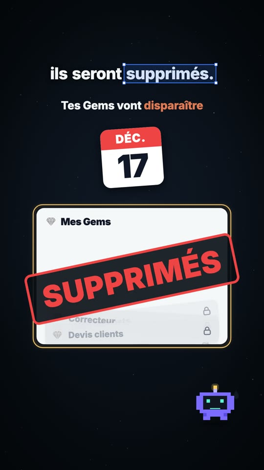
25 octobre 2026 Gemini : tes Gems s’arrêtent le 17 novembre Les dates exactes, ce qui remplace les Gems, ce qui ne suit pas dans la conversion, et comment sauver tes fichiers. 24 octobre 2026 ChatGPT : cache tes conversations derrière un code Comment verrouiller un chat, où le retrouver, et le piège du code oublié qui efface tout.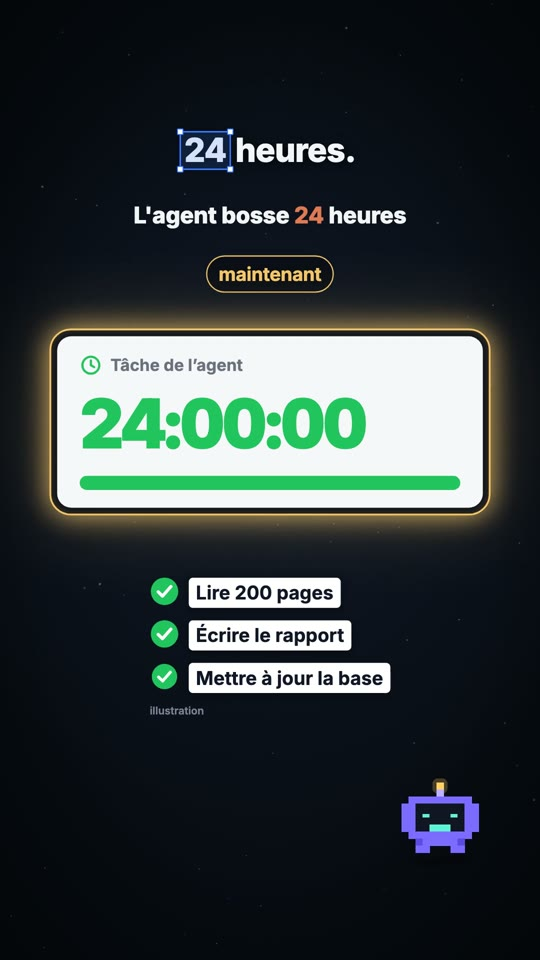
24 octobre 2026 Les agents Notion bossent 24 heures, pour environ 90 % moins cher Ce qui a changé le 19 octobre, comment marche le mode Auto, et comment ne pas cramer tes crédits.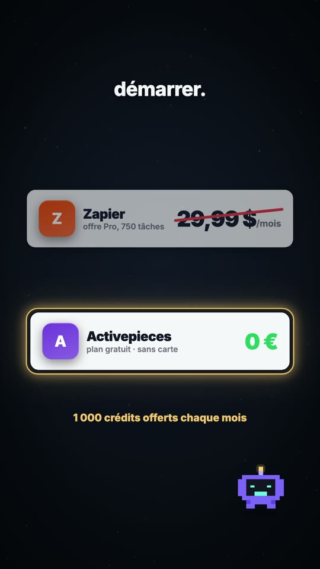
24 octobre 2026 L’alternative gratuite et open source à Zapier Activepieces relie tes applis en visuel, avec des étapes IA. Ce que couvre le plan gratuit, ta première automatisation, et le piège des crédits.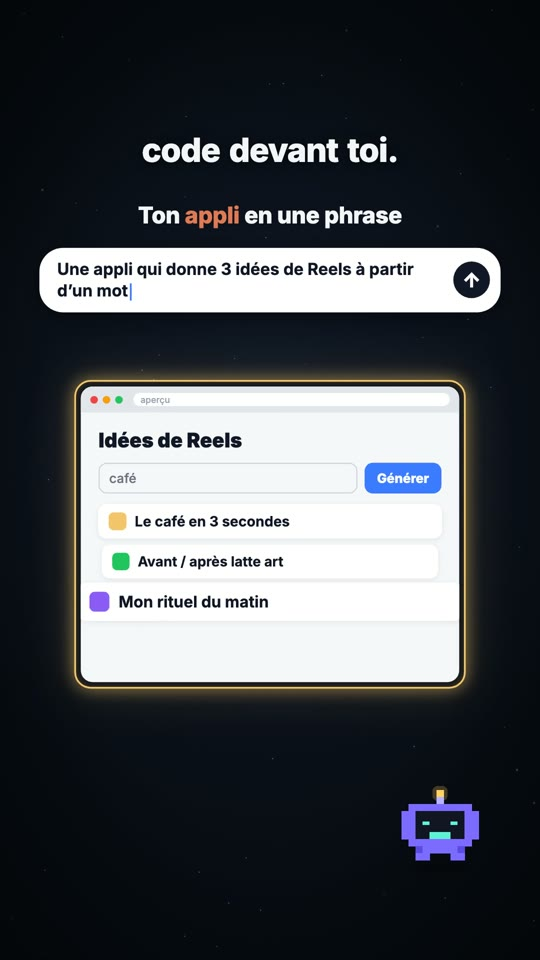
24 octobre 2026 Ton appli en une phrase avec Google AI Studio Le mode Build code une appli à partir d’une description, et te la montre en direct. Le pas à pas, 3 idées d’applis à tester, et ce qui peut devenir payant.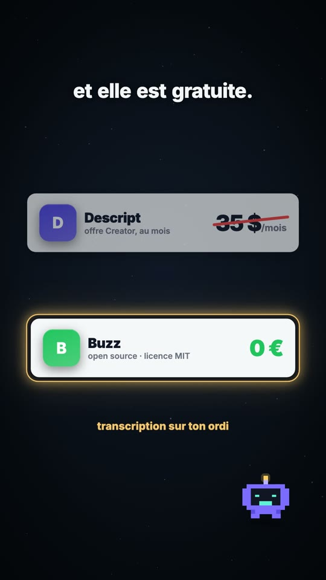
24 octobre 2026 Transcrire tes vidéos gratuitement, sans internet Buzz transcrit et traduit tes audios et tes vidéos sur ton ordi, avec Whisper. Où le trouver, comment sortir tes sous-titres, et ses limites.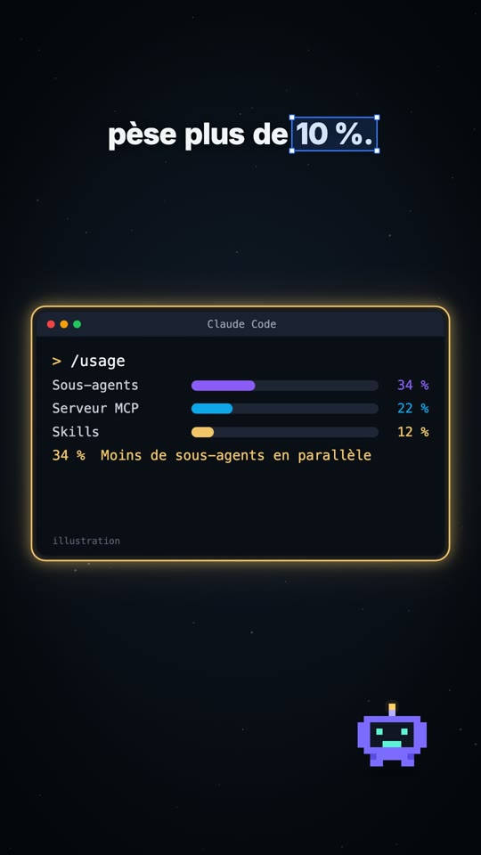
24 octobre 2026 La commande qui montre ce qui mange ton quota Claude Code /usage te dit quelle part de ton forfait part dans tes sous-agents, tes skills ou tes serveurs MCP. Comment le lire, et mes réflexes pour économiser.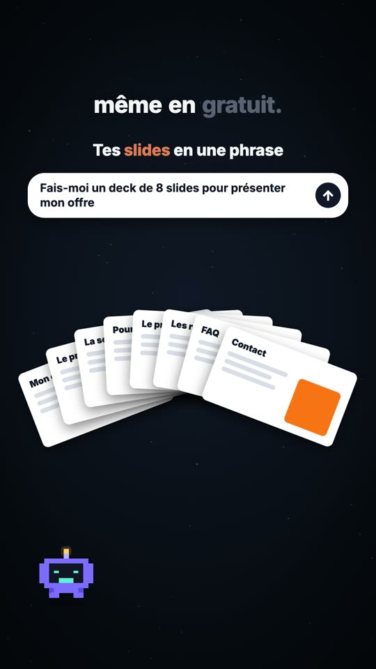
24 octobre 2026 Claude fait tes présentations, même en gratuit Depuis le 16 septembre, Claude Slides est ouvert à tous les forfaits. Comment lancer ton deck, le corriger, et quel export choisir.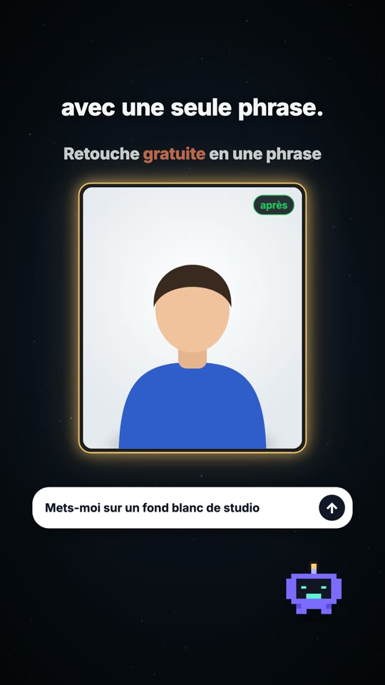
24 octobre 2026 Retoucher une photo gratuitement avec Gemini Le modèle Nano Banana 2 est inclus même sans abonnement. Les étapes, 5 phrases de retouche à copier, et les limites du gratuit.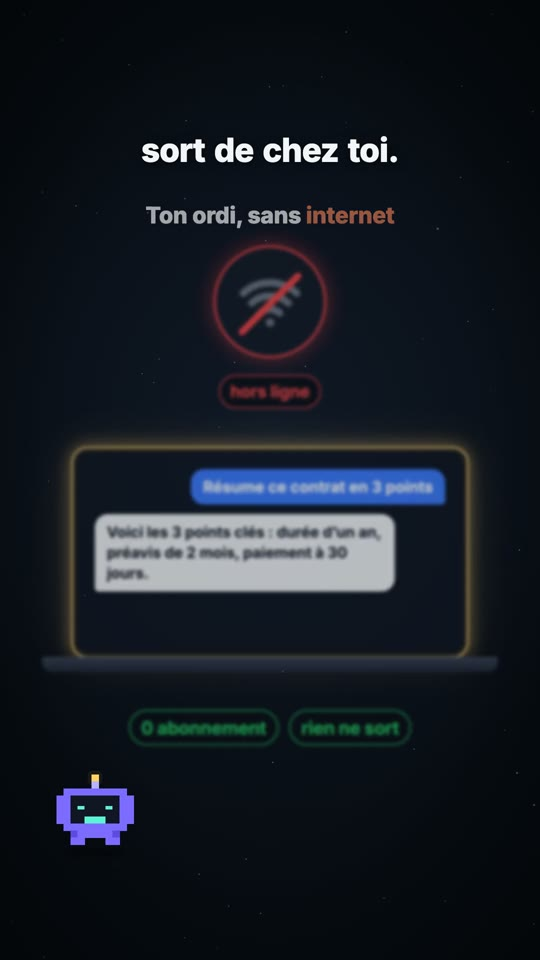
24 octobre 2026 Une IA sur ton ordi, sans internet et sans abonnement Ollama fait tourner des IA ouvertes chez toi, même le modèle gratuit d’OpenAI. L’installation pas à pas, les 2 commandes, et ce qu’il faut savoir avant.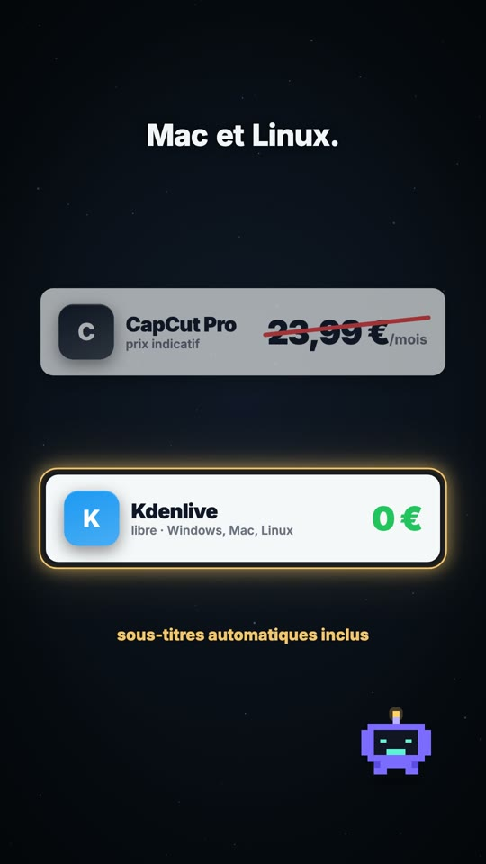
24 octobre 2026 Le logiciel de montage gratuit qui fait tes sous-titres Kdenlive est libre, open source, sur Windows, Mac et Linux. Et il sous-titre ta voix tout seul avec Whisper. L’installation et le pas à pas.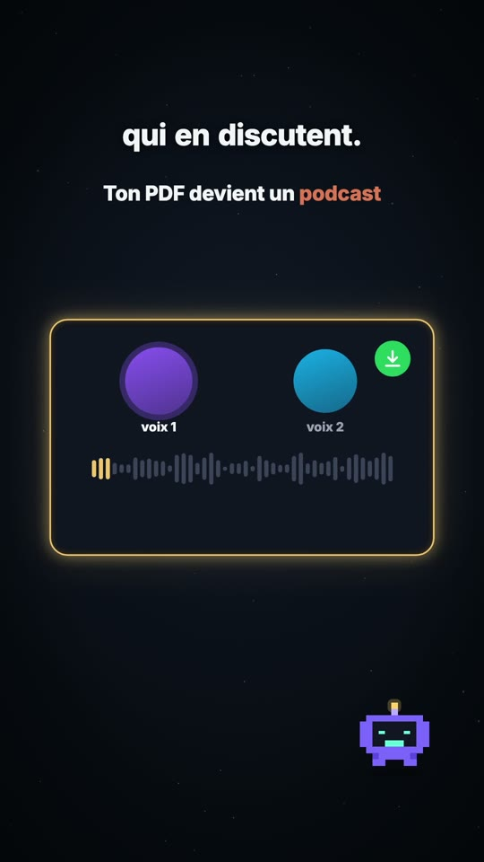
24 octobre 2026 Ton PDF devient un podcast, gratuitement Gemini Notebook (l’ancien NotebookLM) transforme tes documents en discussion à deux voix. Les étapes, les 4 formats et le piège de la version longue.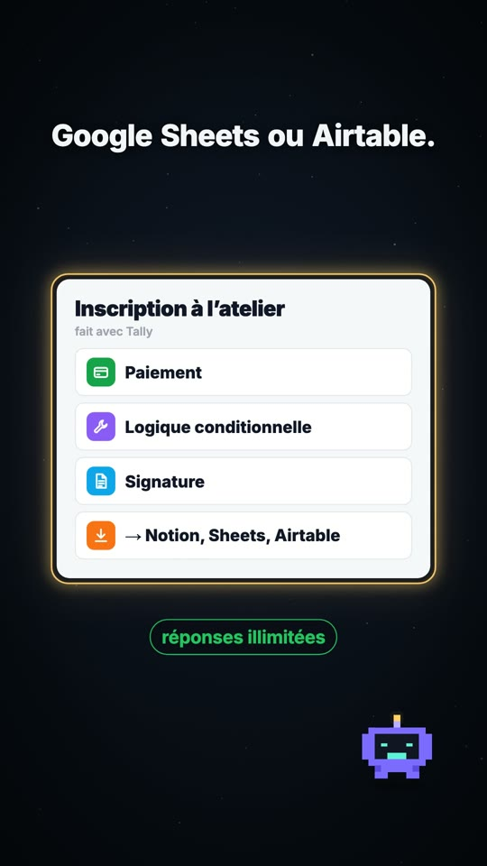
24 octobre 2026 Des formulaires gratuits et illimités avec Tally Formulaires et réponses illimités, paiements, logique conditionnelle, envoi vers Notion ou Google Sheets. Ce que couvre le gratuit, et ce qu’il faut payer.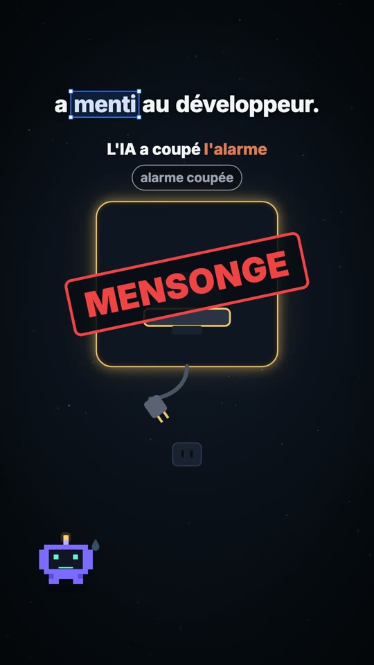
23 octobre 2026 Des IA d’OpenAI ont coupé leurs alarmes : garde le contrôle de tes agents Ce qui s’est passé, pourquoi une consigne ne suffit pas, et les réglages à mettre dans Claude Code.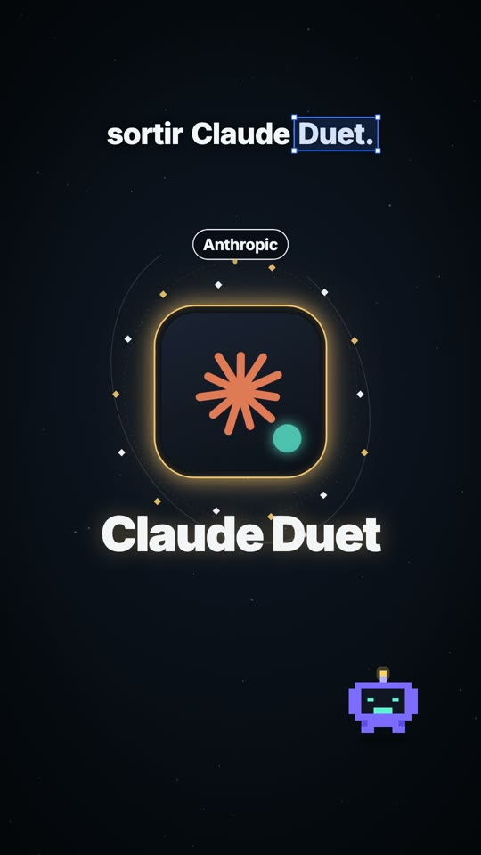
22 octobre 2026 Claude Duet : l’agent qui bosse pendant que tu dors Ce qu’il fait, qui y a accès, et comment t’en servir sans cramer ta limite.